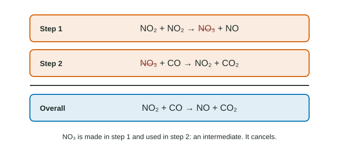

Introduction to Reaction Mechanisms
A reaction mechanism is a sequence of elementary steps that adds up to the overall balanced equation.
Part 1 · Hook
Why this matters
Part 2 · Before you start
What this builds on
Part 3 · Prerequisite check
Quick check before you start
1. What is the rate law for the elementary step NO + O₃ → NO₂ + O₂?
- rate = k[NO][O₃]
- rate = k[NO₂][O₂]
- rate = k[NO]²
- It must be measured
Show the answer
For an elementary step, the coefficients are the orders.
- Correct: rate = k[NO][O₃]:
- rate = k[NO₂][O₂]:
- rate = k[NO]²:
- It must be measured:
2. Which elementary step is least likely to happen?
- One with four particles colliding at once
- One with two particles colliding
- One particle breaking apart
- One with a small activation energy
Show the answer
Four particles meeting in the same instant essentially never happens.
- Correct: One with four particles colliding at once:
- One with two particles colliding:
- One particle breaking apart:
- One with a small activation energy:
Part 4 · See it
See it first

Part 5 · Step by step
How it works, step by step
- Many-particle collisions are too improbablemost reactions happen in a series of one- and two-particle elementary steps
- Some species are made in one step and used in a later onethey cancel when the steps are added: they are intermediates
- The steps must add up to the overall equationthis sum test rules out some proposed mechanisms
- Several mechanisms can pass the sum testa mechanism is only consistent with the evidence, never proved by it
Part 6 · Key ideas
Key ideas
- A reaction mechanism is a series of elementary steps that adds up to the overall equation.
- An intermediate is made in one step and used in a later step; it does not appear in the overall equation.
- Add the steps and cancel species that appear on both sides to check a mechanism.
- A mechanism that passes the tests is consistent with the evidence, not proven.
Part 7 · Misconception
A common mistake
The wrong idea: An intermediate is the same thing as a transition state.
What actually happens: An intermediate is a real species made in one step and used in another; it sits in a valley between steps. A transition state is the peak of a single step and cannot be isolated.
Part 8 · Check yourself
Check yourself
Exam-style questions. Anything you miss goes into your review queue.
Model
A proposed mechanism for making water from NO and H₂
The overall reaction 2 NO(g) + 2 H₂(g) → N₂(g) + 2 H₂O(g) is proposed to happen in three elementary steps:
- 2 NO → N₂O₂
- N₂O₂ + H₂ → N₂O + H₂O
- N₂O + H₂ → N₂ + H₂O
1. Which species are intermediates in this mechanism? Select all that apply.
- N₂O₂
- N₂O
- H₂
- H₂O
Show the answer
N₂O₂ forms in step 1 and is used in step 2; N₂O forms in step 2 and is used in step 3. Neither appears in the overall equation. H₂ is a reactant and H₂O a product.
- Correct: N₂O₂: Right: made in step 1, used in step 2.
- Correct: N₂O: Right: made in step 2, used in step 3.
- H₂: H₂ is used in steps 2 and 3 and never made: it is a reactant.
- H₂O: H₂O is made in steps 2 and 3 and never used: it is a product.
2. Does the mechanism add up to the overall reaction?
- Yes: the intermediates cancel and the sum matches
- No: the steps make just one H₂O in total
- No: N₂O₂ is left over at the end
- Yes, provided step 1 is written twice
Show the answer
Add the steps: 2 NO + N₂O₂ + H₂ + N₂O + H₂ → N₂O₂ + N₂O + H₂O + N₂ + H₂O. Cancel N₂O₂ and N₂O from both sides: 2 NO + 2 H₂ → N₂ + 2 H₂O.
- Correct: Yes: the intermediates cancel and the sum matches: Right: the sum matches the overall equation.
- No: the steps make just one H₂O in total: Steps 2 and 3 each make one H₂O, two in total.
- No: N₂O₂ is left over at the end: N₂O₂ is made in step 1 and used in step 2, so it cancels.
- Yes, provided step 1 is written twice: Each step is used once; writing step 1 twice would give 4 NO.
3. What is the molecularity of step 2?
- Unimolecular
- Bimolecular
- Termolecular
- Tetramolecular
Show the answer
Step 2 is one N₂O₂ colliding with one H₂: two particles.
- Unimolecular: One particle would be unimolecular; this step has two.
- Correct: Bimolecular: Right: two reactant particles.
- Termolecular: Three particles would be termolecular.
- Tetramolecular: Four particles never collide at once in an elementary step.
Model
Two mechanisms proposed for one reaction
The overall reaction is 2 O₃(g) → 3 O₂(g). Two students propose mechanisms. In each, every step occurs once each time the overall reaction occurs.
Mechanism X
- O₃ → O₂ + O
- O + O₃ → 2 O₂
Mechanism Y
- O₃ → O₂ + O
- O + O → O₂
4. Which mechanism adds up to the overall reaction?
- Mechanism X
- Mechanism Y
- Both mechanisms
- Neither mechanism
Show the answer
X: O₃ + O + O₃ → O₂ + O + 2 O₂; cancel O: 2 O₃ → 3 O₂. ✓. Y: O₃ + O + O → O₂ + O + O₂; cancel one O: O₃ + O → 2 O₂, which is not the overall equation.
- Correct: Mechanism X: Right: X sums correctly and Y does not.
- Mechanism Y: Y sums to O₃ + O → 2 O₂, which is not the overall reaction.
- Both mechanisms: Y fails the sum test.
- Neither mechanism: X passes the sum test.
5. In mechanism X, what is the oxygen atom, O?
- An intermediate
- A reactant
- A product
- A transition state
Show the answer
O is made in step 1 and used in step 2, and it does not appear in the overall equation: an intermediate.
- Correct: An intermediate: Right: formed, then consumed.
- A reactant: A reactant is used and not made; O is made first.
- A product: A product is made and not used; O is used in step 2.
- A transition state: A transition state is the top of one step's energy barrier, not a species made in one step and used in the next.
6. The mechanism (1) A + B → C; (2) C + B → D is proposed. What is the overall reaction?
- A + 2 B → D
- A + B → D
- A + B + C → C + D
- C + B → D
Show the answer
Add the steps: A + B + C + B → C + D. Cancel C: A + 2 B → D.
- Correct: A + 2 B → D: Right: C cancels; B appears twice.
- A + B → D: This forgets that B is used in both steps.
- A + B + C → C + D: C must be canceled, because it appears on both sides.
- C + B → D: That is only step 2.
Part 9 · Summary
Summary
Part 10 · Up next
What comes next
Part 11 · Connections